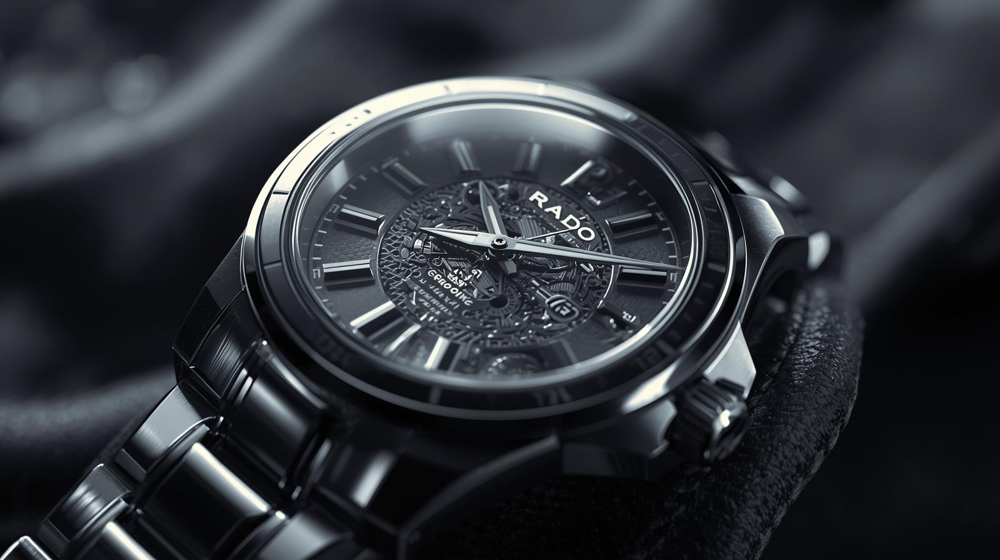
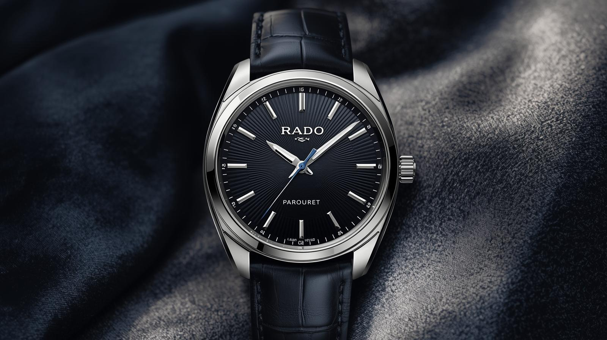

Premium Materials
High-tech ceramic and sapphire crystal for long-lasting elegance.
Design innovation with world-class engineering.
High-tech ceramic and sapphire crystal for long-lasting elegance.
Every movement is built to deliver consistent precision every day.
Contemporary craftsmanship recognized globally for decades.
More than 100 years of experience in luxury watchmaking.
Discover the lines that define modern luxury.
.jpg)
Vintage spirit with modern reliability.

Slim profile and elegant everyday style.
.jpg)
Minimal design with high-tech ceramic feel.

Iconic durability with unmistakable identity.
A long legacy of innovation and style.
Brand foundation with a mission to create quality Swiss watches.
Launch of DiaStar, the world's first scratch-resistant watch.
Introduction of high-tech ceramic that transformed watch comfort.
Global expansion and iconic design collaborations across markets.
Combining heritage and modern innovation for new generations.
Signature looks from our most loved timepieces.



What watch lovers say about Rado.
"The finishing quality is premium and the ceramic feels incredible."
"Perfect blend of classic and modern. It works with every outfit."
"Reliable movement and timeless look. Worth every rupee."
Quick answers for customers.
Yes, most models provide water resistance. Always check model specifications before use.
Every genuine watch includes an official international warranty with after-sales service.
Choose based on use case: everyday elegance, formal luxury, or sporty heritage styles.
Subscribe for latest models, limited editions, and seasonal offers.